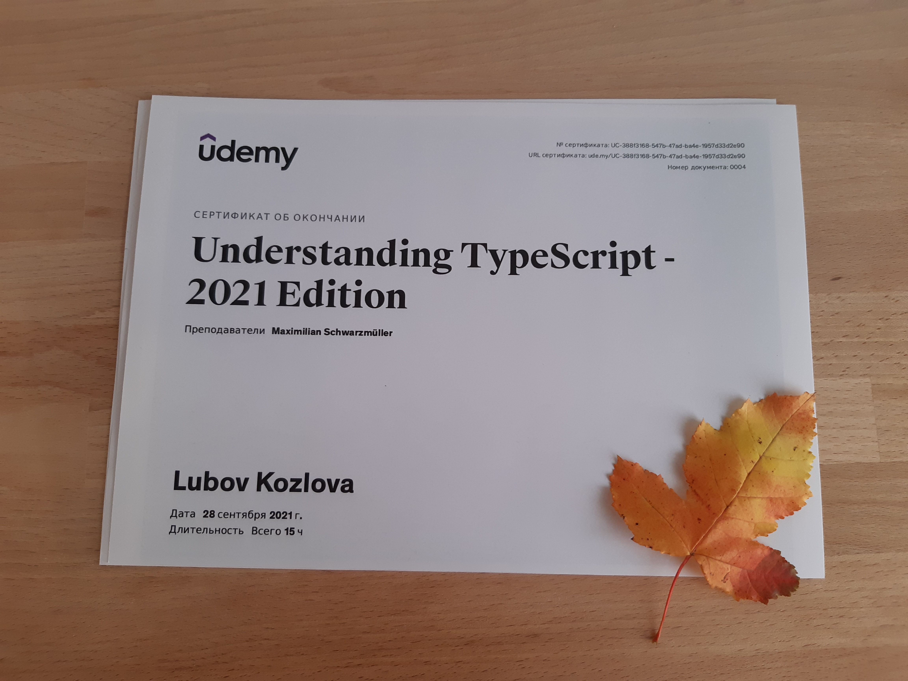

Привет!
В первом посте похвастюсь прохождением курса - “Understanding TypeScript -2021 Edition” от Maximilian Schwarzmüller.
Об авторе
Автор немец, но курсы записывает на английском. Язык не сложный, говорит очень четко и размеренно, иногда даже начала ускорять скорость видео)) По началу смотрела с субтитрами, сейчас просто на слух.
Мне очень нравится его бодрая и конструктивная манера изложения, если смотрю утром - то очень хорошо настраивает на рабочий продуктивный день.
Заодно и английский потихоньку прокачивается.
О курсе
Я программирую на TypeScript уже два года, изучив основы и посмотрев как написаны рабочие проекты. Но давно хотелось углубиться в детали и систематизировать знания. И вот во время больничного у меня наконец образовалось достаточно времени, чтобы плотно заняться курсом.
Что было нового и полезного для меня:
- Разобраться во всех предоставляемых типах, часть я раньше не использовала. Разобраться в отличиях any от unknown
- Подробная настройка конфигурации через tsconfig.json. Правда некоторые интересные флаги остались неосвещенными, придется еще копать
- Систематизировать знания по классам в ts, посмотреть как они компилируется в ES6 и ES5
- Typeof, InstanceOf и Discriminated Unions для определения типа/класса
- Перегрузка функций
- Детали работы Generics, “keyof” Constraint
- Декортаторы (!) классов, методов и свойств
- И на сладенькое - написание простенькой апишки на Node / Express / TS. Не совсем ожидаемо в этом курсе, но давно хотела попробовать
В общем, я осталась довольна курсом. Рекомендую всем, кто в такой же ситуации как и я - есть опыт кодинга, но хочется погрузиться детальнее.